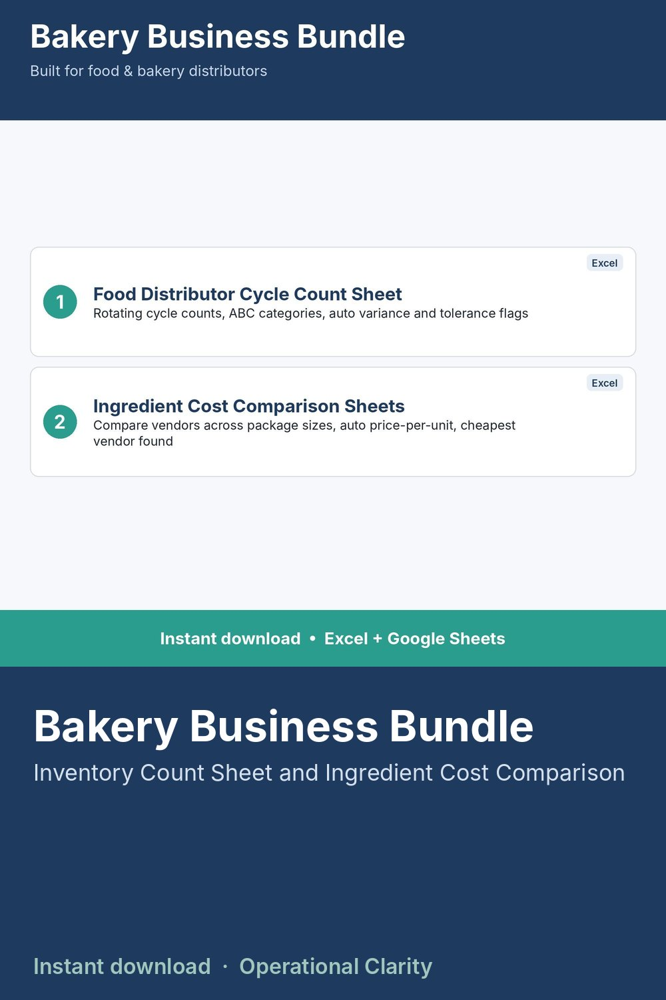

Bakery Business Bundle

BUILT SPECIFICALLY FOR FOOD AND BAKERY DISTRIBUTORS - NOT A GENERIC INVENTORY TEMPLATE RELABELED.
Two specialized templates built from direct food/bakery distribution experience, covering the two problems generic inventory tools don't handle well: rotating cycle counts and comparing ingredient vendors who sell different package sizes.
WHAT'S INCLUDED
1. Food Distributor Cycle Count Sheet - supports real cycle counting (rotating subset counts, not one annual count), ABC categorization, auto-variance calculation, flags anything outside tolerance
2. Ingredient Spec Comparison Sheets - compare vendors for the same ingredient side by side even with different package sizes, auto price-per-unit, auto-finds the cheapest vendor per ingredient
WHAT'S INCLUDED PER TEMPLATE
- Excel file (.xlsx) - no macros
- Start Here tab with setup instructions
- Realistic bakery/food sample data included
WHO THIS IS FOR
Food and bakery distributors who need inventory and sourcing tools built around how food distribution actually works, not a repurposed generic warehouse template.
INSTANT DOWNLOAD - no physical item will be shipped. Because this is a digital product, all sales are final.